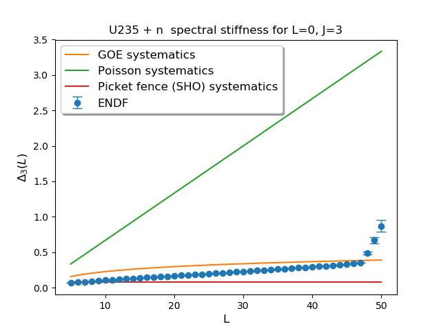
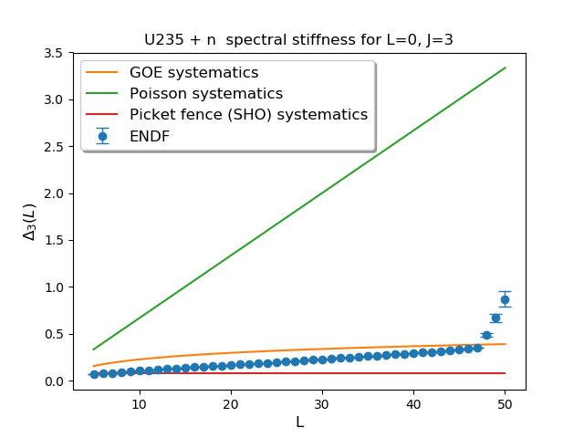
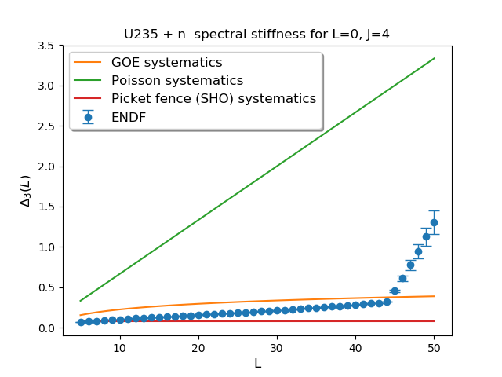
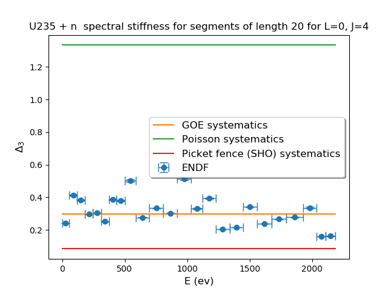
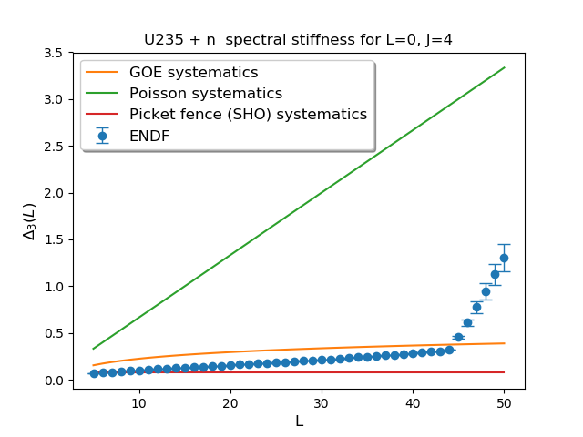
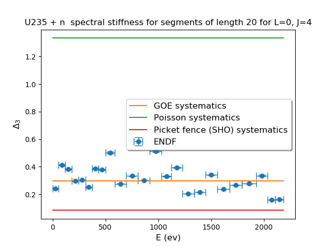

| No. resonances | No. resonances w/ ER<0 | gfact | Threshold E (eV) | Eliminated? | Competative? | Relativistic? | Pot. scatt. only? | RRR <D> (eV) | RRR <Gamma> (eV) |
|---|
| U236 + photon (j=3.0,l=0,s=0.5) | 1449 | 5 | 1.0 | -6572514.69313 | True | False | False | False | 1.56 +/- 0.92 eV | 0.042 +/- 0.010 eV |
| n + U235 (j=3.0,l=0,s=1.5) | 1449 | 5 | 0.4375 | -0.0 | False | False | False | False | 1.56 +/- 0.92 eV | 4.8e-3 +/- 7.4e-3 eV |
| Fission (j=3.0,l=0,s=0.0) | 1449 | 5 | 1.0 | -194909859.8501104 | False | False | False | False | 1.56 +/- 0.92 eV | -4.e-3 +/- 0.15 eV |
| U236 + photon (j=4.0,l=0,s=0.5) | 1746 | 4 | 1.0 | -6572514.69313 | True | False | False | False | 1.30 +/- 0.77 eV | 0.042 +/- 0.011 eV |
| n + U235 (j=4.0,l=0,s=2.0) | 1746 | 4 | 0.5625 | -0.0 | False | False | False | False | 1.30 +/- 0.77 eV | 4.3e-3 +/- 5.9e-3 eV |
| Fission (j=4.0,l=0,s=0.0) | 1746 | 4 | 1.0 | -194909859.8501104 | False | False | False | False | 1.30 +/- 0.77 eV | -0.01 +/- 0.15 eV |
 



 


